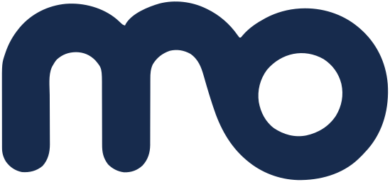

AN ONGOING STORY↗
모너로그.생각하고, 만들고, 다시 해보는 기록.YOUTUBE
01 / OWNED CHANNEL
직접 운영하는 채널,
모너로그
내 생각을 콘텐츠로 만들고, 시청자의 반응을 통해 다음 기획을 고민합니다. 콘텐츠와 채널 데이터를 함께 쌓아가는 저의 실험 공간입니다.
- 분야
- 유튜브 채널 운영
- 역할
- 운영 · 콘텐츠 기획 · 영상 편집

MOWNERPORTFOLIO & ARCHIVE안녕하세요. 콘텐츠를 만드는 모너입니다.
기획하고, 편집하고, 직접 채널을 운영합니다.
AI와 함께 만드는 다음 방식도 실험하고 있습니다.
채널을 운영하며 얻은 경험부터
새로운 제작 방식에 대한 실험까지.
내 생각을 콘텐츠로 만들고, 시청자의 반응을 통해 다음 기획을 고민합니다. 콘텐츠와 채널 데이터를 함께 쌓아가는 저의 실험 공간입니다.
AI 영상 콘텐츠 프로젝트 두 건에 참여했습니다. 현재 대기업 건설사 프로젝트에도 참여하며 실제 제작 현장에서의 활용을 경험하고 있습니다.
프로젝트별 소개와 작업물은 공개 범위 확인 후 추가합니다.
기획과 편집의 경험에 AI를 연결합니다. 실제 콘텐츠를 만드는 과정에서 무엇을 맡기고, 무엇을 직접 판단해야 하는지 연구하고 있습니다.
제작 과정과 실험 기록을 정리하며 업데이트합니다.
기획 PD의 시선으로 이야기의 방향과 구성을 고민합니다.
이야기의 흐름과 호흡을 살려, 생각이 전달되는 영상으로 만듭니다.
채널 운영에서 쌓인 데이터와 경험을 다음 콘텐츠에 연결합니다.
콘텐츠 PD이자 편집자,
모너로그를 운영하는 모너입니다.
직접 콘텐츠를 만들고 채널을 운영하면서, 만드는 일과 전달하는 일을 함께 경험하고 있습니다.
지금은 AX 기반의 콘텐츠 제작을 연구하고, AI 영상 콘텐츠 프로젝트에 참여하고 있습니다. 새로운 도구가 실제 제작에서 어떤 역할을 할 수 있는지 현장에서 배우고 있습니다.
이곳에 그 결과와 과정을 하나씩 모읍니다.
지나간 일이 다음 일의 출발점이 되도록.